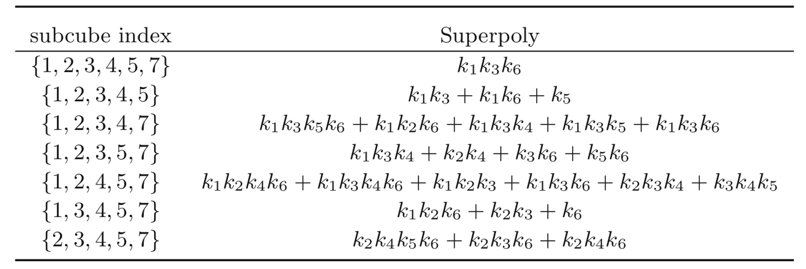

Improved Graph-Based Model for Recovering Superpoly on Trivium
Liu chen, Tian tian等人发表在JSSC2023：原文
研究意义
cube攻击中，需要通过对超多项式求解来获得密钥信息，超多项式次数越低，在攻击中可能越容易求解。如果随机的选择cube，大概率得到的超多项式是比较复杂的。因此搜索cube的方法非常关键。
motivation
对于如何寻找一组理想的候选cube集合，目前没有找到特别好的方法。
- 田甜等人提出了805轮搜索cube的方法，依赖于Möbius变换来估计次数，该方法对轮数有限制
insight
通过将一个大cube重复划分为两个不相交的子cube，来估计超多项式中高次项出现的频率，从而判断超多项式是否容易恢复
一个实例如下：
将给定的cube划分为多个子cube对: 目标是对于一个给定的cube集合（例如$cube I$）想要找到超多项式次数低的子cube集合
- $cube I$划分为很多种两个不相交子集的形式；
- 对于每一种划分，估计两个子cube的超多项式的次数来判断超多项式是否容易恢复。
- 在下图例子中，假如输出多项式为$h=fg$，可以计算134在f和g上的次数，计算257在f和g上的次数，以及他们的子集13，14，34等。
- 最终对于这一种划分可以得到组合起来可能次数低的子cube集合.

统计不同子cube组合的次数估计结果:
- 对于所有的划分情况，统计了子cube出现频率.
- 对于不同的划分，估计的超多项式次数都比较低，其对应的超多项式比较简单的概率也越大。
- 因此搜索到了一组大概率超多项式容易恢复的子cube

找到可能超多项式次数低的子cube：
- 最终结果看，该方法得到的子cube对应的超多项式确实次数比较低 
- 最终结果看，该方法得到的子cube对应的超多项式确实次数比较低
贡献
- 提出了一种cube筛选算法，可以根据给定cube，得到一个超多项式次数较低的候选子cube集合。
- 作者实现了Trivium-815轮的理论攻击，攻击复杂度为$2^{72.46}$。
评价
- 作者的方法其实是改进了805轮搜索cube的方法中的一个步骤，大部分步骤和之前的方法是相似的，例如cube扩展的过程，初始cube的选择等。
- 次数估计使用的Mobius变换方法没有具体介绍
总结
在基于可分性的cube攻击中，选择超多项式次数低的cube是非常关键的。因为随机的选择cube是低效的，所以搜索cube的方法很重要。作者发现目前没有特别好的方法来得到一些理想的cube，因此提出了一种cube筛选算法，可以根据给定的cube，得到一个超多项式次数较低的候选子cube集合。算法的核心思想是通过将一个大cube重复划分为两个不相交的子cube，来估计超多项式中高次项出现的频率，从而判断超多项式是否容易恢复。最终作者实现了Trivium-815轮的理论攻击，攻击复杂度为2^72.46。我认为作者主要通过cube拆分来解决次数估计时M𝑜 ̈bius变换对轮数的限制问题，作者提出的方法更像是Trivium-805轮搜索cube的方法的改进。
上述内容仅用于非领域人员快速了解，具体实现逻辑及细节不做展示
Welcome to MinZhang’s space! If you have any questions about the following issues, you can contact me on GitHub or email- zhangmin2022@iie.ac.cn.